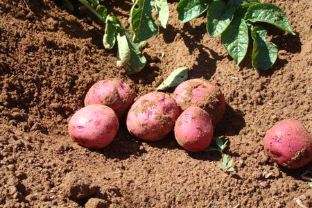
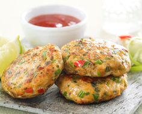
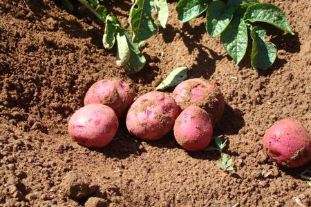
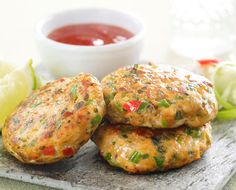
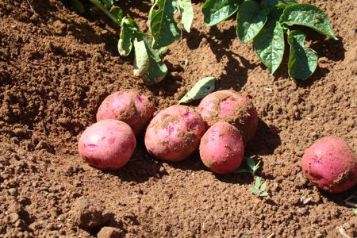
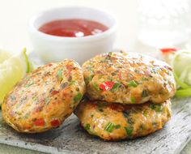

Prince Edward Island Food and Drink
The island offers plenty of plain, wholesome, home-cooked food in restaurants. Service is informal and friendly.
There are also many seafood outlets where you can buy fresh fish and shellfish in season and take it away to cook
on barbecues or camp fires.
Specialities:
- Shellfish - lobster, in particular - is a mainstay of the dinner table. Lobsters are steamed or boiled and included
in casseroles or chowder and salads.
- Oysters are popular; they may be served with tangy sauce, deep-fried, in pies, scalloped, or in soufflés, soups and
stews.
- Prince Edward Island is famous for its new potatoes (small, round potatoes), and a favourite with locals are new
potatoes boiled in their skins, then mashed and served with lots of butter, salt and pepper.
- Fish cakes made with salt cod and potatoes


Easy Baked Potato Soup
Servings: 8
5 medium russet potatoes
6 tablespoons margarine
2/3 cup all-purpose flour
6 cups skim milk
salt and pepper to taste
1 cup sour cream (can use fat free)
1 (3oz) jar real cooked bacon bits
1 bunch green onions -- chopped
1 (8oz) pkg shredded cheddar cheese
Was and dry potatoes; pierce with a fork. Put in a white plastic grocery bag ( the kind from the check-out, not from
the produce section); tie a double knot. Microwave on high 10 min. Bag will puff up.
Meanwhile, melt margarine in a large soup pot. Add flour; whisk to combine. Add milk slowly, whisking until lightly thickened.
Remove bag of potatoes from oven. Carefully cut open bag. It will be very hot. After potatoes are cool enough to handle, chop potatoes,
including skins, and sprinkle with salt and pepper. Add to soup. Stir well and add sour cream, bacon, green onions and cheese. Reserve
some bacon, green onions and cheese for garnish.
Fish cakes
7 c. fish
5 eggs
4 c. crushed croutons
1/2 tsp. salt
1/2 tsp. pepper
1 tbsp. lemon juice
Cornflake crumbs
Flour
Grind fish, add next ingredients except for breading. Mix together and form "bun size patties". Roll in mixture of equal parts
cornflake crumbs and flour, seasoned with seasoning salt. Freeze on cookie sheet, then bag. Fry in butter flavored Crisco.
 


